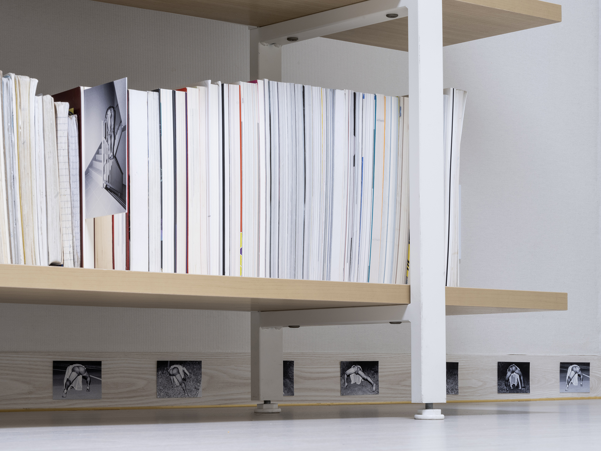
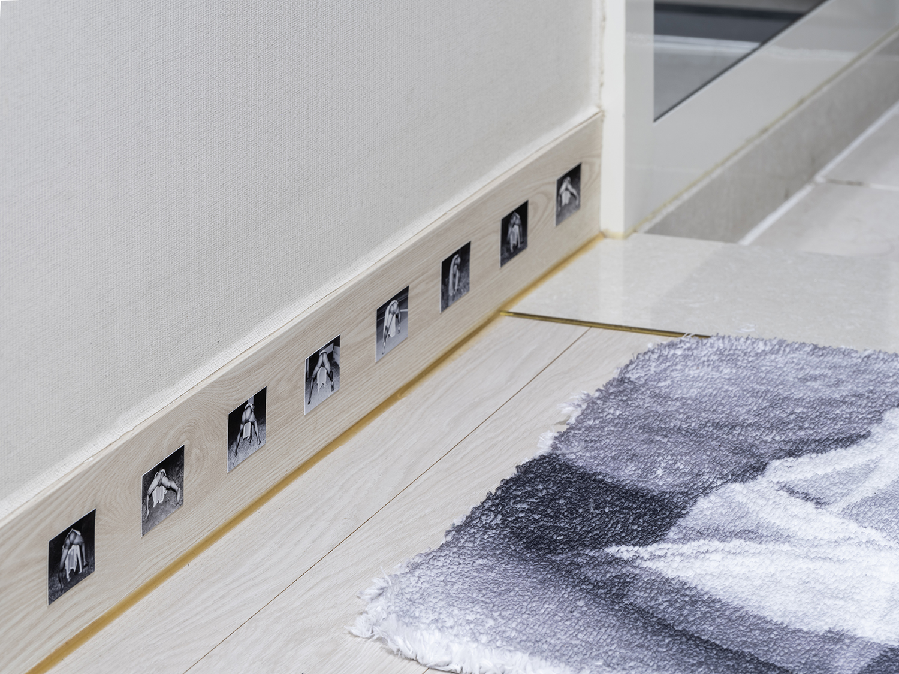

<오래된 방은 궁전>
< 

안초롱: 그런 건 의도한 것 같았어요. <끝없이 걷는 날>을 바닥 몰딩에 배치해 놓은 설치 방식. 관객에게 ‘너네도 엎드려서 봐라’라는 메시지처럼 읽혔는데, 그런 건 의도대로 잘 전달이 된 것 같아.
그리고 또 궁금했던 부분, ‘오래된 방은 궁전’이 전시 제목이고 동명의 사진 작업이기도 하잖아요. 근데 이 사진이 - <수염 드로잉>을 제외하면 - 유일한 정면 이미지란 말이지. 그래서 왜 정면 이미지를 메인으로 했을까? 물어보고 싶었습니다.
재훈: <끝없이 걷는 날>이나 <여름의 뒷면>에 쓰인 사진에는 인물의 의상보다 포즈가 중요해요. 전자에서는 네 발로 걷는 행위와 그 방향, 후자에서는 폭력을 당했거나 예견한 모습. 스타킹이나 란제리, 가발 등은 그런 능동/수동적인 모습이 출현할 수 있도록 만들어준 조건으로 역할 해왔고요.
<오래된 방은 궁전>에서는 반대로 아무 포즈도 안 하고 가만히 있는 인물이 보이는데요. 상대적으로 덜 자극적이고 덜 익명적인 이 사진을 처음 확인했을 때 이 사진 속 인물의 섹슈얼리티가 프로젝트의 초기 목표 중 하나였던 ‘나에게 필요한 정체성 찾기’와 상응한다고 느꼈어요. 그 모습이 이 전시에 있으며 관객을 맞이하면 좋겠었습니다.

안초롱: 제목 잘 지은 것 같아요. ‘궁전’이란 단어는 - 성적 판타지처럼 - 판타지적인 뉘앙스로 다가오고, ‘방’은 사적인 공간, ‘오래된’은 “취미가 오래됐나?”라는 식으로 느껴졌거든요. 각자의 경험치에 따라서 상상할 수 있는 여지가 있어서 괜찮았어요.
재훈: 다행이네요.
<거꾸로 뜨는 눈>과 작가라는 직업
안초롱, 재훈
2024.07.31
<끝없이 걷는 날>과 <무제> 그리고 사진
안초롱, 재훈
2024.07.31
그 소녀
안초롱, 재훈
2024.07.31
크레딧
안초롱, 재훈
2024.07.31
<여름의 뒷면>과 <대기 시간>
안초롱, 재훈
2024.07.31
가동초등학교 2학년 김재훈
안초롱, 재훈
2024.07.31
<수염 드로잉>
안초롱, 재훈
2024.07.31